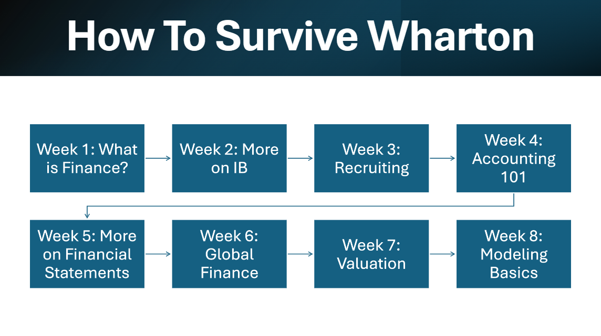

Wharton Crash Course
Your comprehensive guide to thriving at the Wharton School
How to Survive Wharton is the ultimate crash course designed for understanding the intricacies of Penn’s business school. Over 7 weeks, we’ll break down everything you need to know to get ahead at Wharton and beyond: what careers in IB, PE, VC, and consulting actually look like, how recruiting works, how to read financial statements, and how companies are valued in the real world. From your first coffee chat to your first offer — IBEC’s got your back.
Academic Excellence
Course Selection Strategy
Core Requirements: Complete your core courses early to maximize flexibility for electives
Professor Research: Use Penn Course Review and talk to upperclassmen to identify the best professors
Balanced Schedule: Mix quantitative and qualitative courses each semester
Study Strategies
Study Groups: Form consistent study groups for challenging courses like Statistics and Accounting
Office Hours: Attend professor and TA office hours regularly - they're underutilized resources
Case Study Prep: For case-based courses, practice presenting and defending your analysis
Networking & Professional Development
Building Your Network
Alumni Connections: Leverage the Wharton Alumni Network - schedule 15-20 minute coffee chats
Professor Relationships: Build genuine relationships with professors in your areas of interest
Peer Networks: Your classmates will be future business leaders - invest in these relationships
Career Preparation
Career Services: Start using Career Services early, not just for recruiting season
Resume Building: Quantify your achievements and tailor your resume for each industry
Interview Prep: Practice behavioral and technical interviews with career services and peers
Mental Health & Wellness
Stress Management
Work-Life Balance: Set boundaries and make time for activities you enjoy
Exercise: Use Penn's excellent fitness facilities - exercise reduces stress and improves focus
Sleep Schedule: Maintain consistent sleep patterns, especially during busy periods
Mindfulness: Practice meditation or mindfulness techniques to manage anxiety
Support Resources
Counseling & Psychological Services (CAPS): Free counseling services for all Penn students
Academic Support: Tutoring and writing centers are available for academic assistance
Peer Support: Join support groups or find study buddies for accountability
Maximizing Wharton Opportunities
Unique Programs
Wharton International Program: Study abroad or participate in global consulting projects
Venture Initiation Program (VIP): Launch your own startup with university support
Research Opportunities: Work with professors on research projects in your areas of interest
Leadership Ventures: Apply for leadership development programs and retreats
Essential Resources
Academic Resources
Wharton Computing: Access to Bloomberg terminals and financial databases
Lippincott Library: Specialized business library with research support
Career Services: Resume reviews, interview prep, and job search support
Final Thoughts
Success at Wharton isn't just about grades - it's about building relationships, developing skills, and positioning yourself for long-term career success. Take advantage of every opportunity, but remember to maintain balance and take care of your mental and physical health.
Remember: Your Wharton experience is what you make of it. Be proactive, stay curious, and don't be afraid to step outside your comfort zone. The connections you make and the skills you develop here will serve you throughout your career.
Questions about surviving Wharton? Reach out to IBEC members for advice and mentorship!